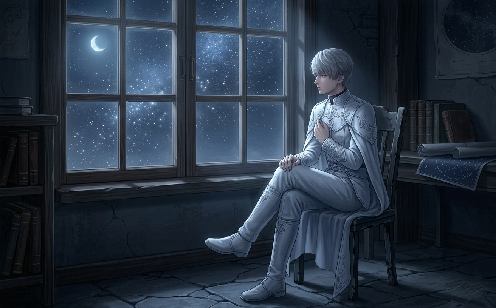
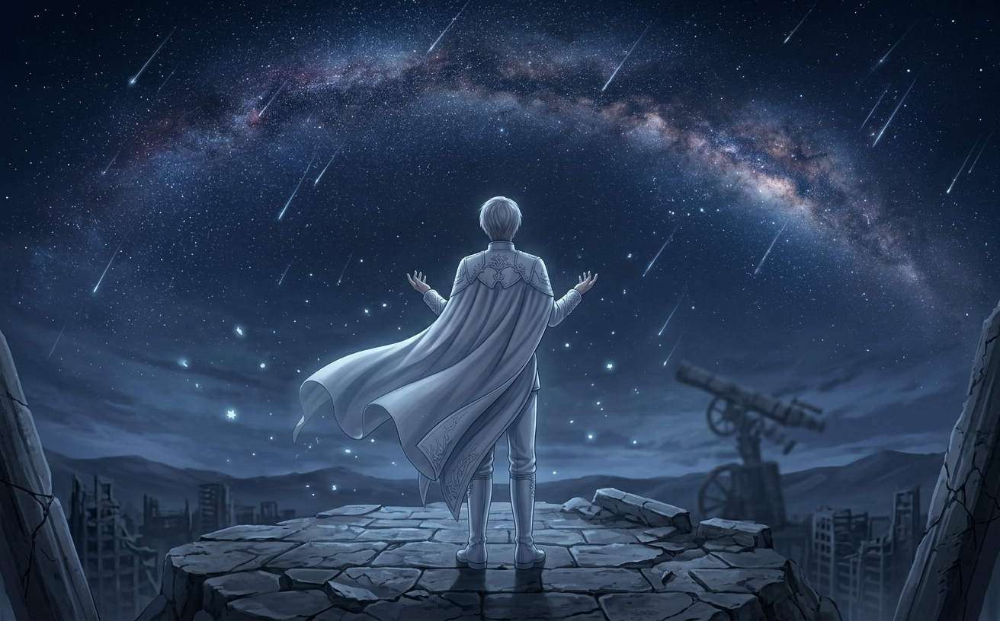
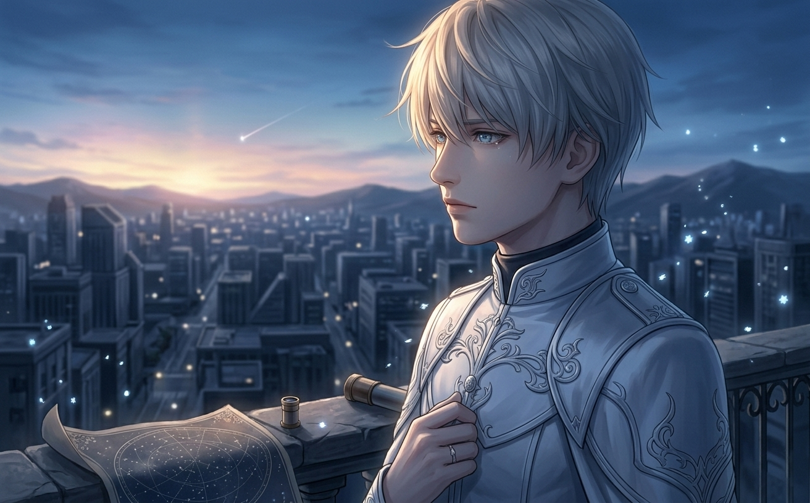
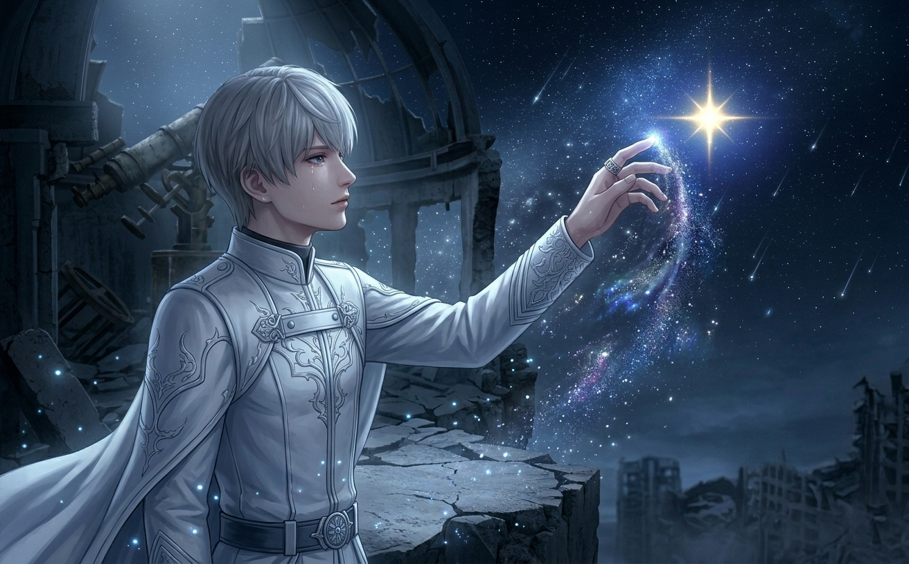
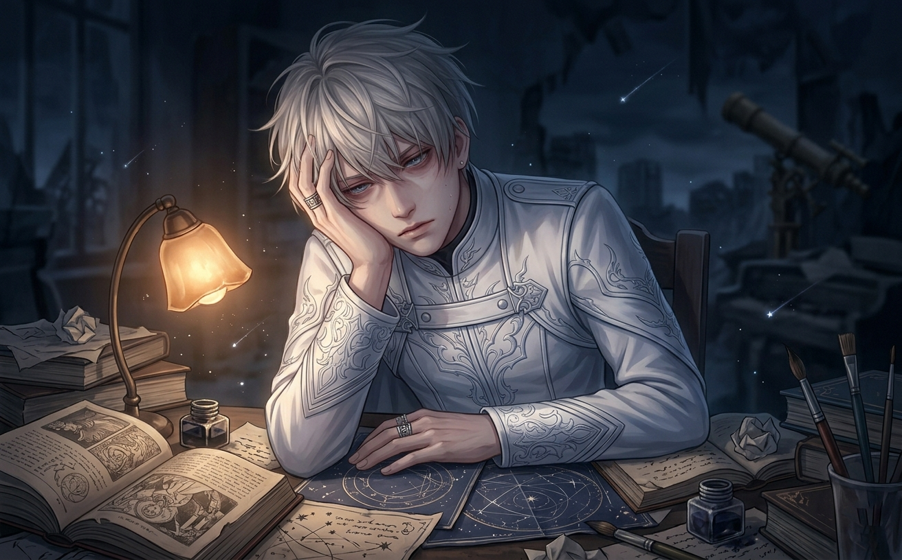
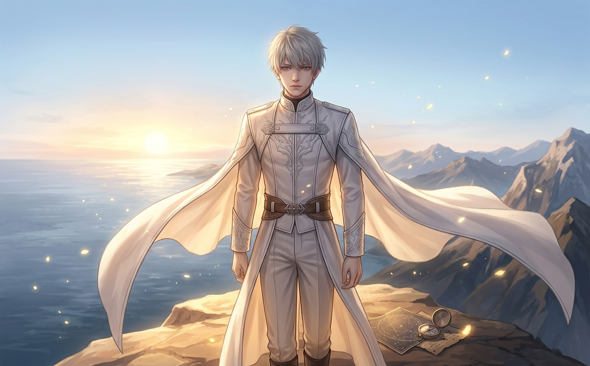

Xavier has lived for over two centuries. He has watched civilizations rise and fall. He has outlived everyone he ever loved. And he never told anyone.
Xavier is quiet.
That's the first thing everyone notices. He doesn't talk much. He doesn't explain himself. He answers questions with silence, or with a gentle smile that reveals nothing. He falls asleep in strange places. He forgets appointments. He seems, frankly, a little bit checked out.
I used to think he was boring.
I was wrong.
The thing about Xavier is that his silence isn't emptiness. It's fullness. He's not quiet because he has nothing to say. He's quiet because he has too much — and he doesn't know how to say any of it without breaking.

He's been looking at the same stars for two hundred years. They never change. Neither does he.
This is not a story about a mysterious knight who saves the day. This is a story about a man who has been alive for over two centuries, watching everyone he loves grow old and die — and still choosing to love again anyway.
Let's do the math.
Xavier has been alive for at least 200 years. Probably longer. In that time, he has watched:
Imagine carrying that weight. Imagine meeting someone new, knowing that if you let yourself care about them, you will almost certainly outlive them. Imagine watching the world change around you — languages, cities, technologies — while you stay exactly the same.
Xavier is not from Linkon City. He's from Philos — a dying planet that he couldn't save. He carries the guilt of survival. He carries the memories of a world that no longer exists. He carries the faces of everyone he left behind.
And he has never told the MC any of this. Not fully. Not openly. The fragments slip out sometimes — in moments of exhaustion, in quiet conversations under the stars — but he always pulls back. Always retreats behind his gentle smile.
This is the weight of centuries. Not drama. Not tragedy. Just... quiet exhaustion. The slow accumulation of grief that never fully heals because there's always more.

He's been watching the same stars fall for two hundred years. They remind him of home.
Xavier's silence isn't a lack of emotion. It's a defense mechanism.
When you've lived as long as he has, you learn that words are dangerous. Words create attachments. Attachments create grief. And grief — when you've already experienced more than anyone should — is something you learn to avoid.
Watch Xavier's dialogue carefully. Every time he almost says something real — something vulnerable — he stops. He changes the subject. He falls asleep. He smiles and says "never mind."
These aren't evasions. They're protections. He's protecting himself from the pain of being truly known. Because being truly known means being truly vulnerable. And vulnerability, for someone who has lost everything multiple times, is terrifying.
The saddest part? He wants to be known. He desperately wants to be known.
He tests the MC constantly. Small gestures. Quiet moments. He watches to see if she notices. If she asks the right questions. If she sees through the silence to the person underneath.
And when she does — when she proves that she's paying attention — something in his expression shifts. Hope. Fear. Both at once.

He's always watching. Always waiting. Always hoping someone will ask the right question.
Here's what I didn't understand about Xavier for a long time.
He's not just wandering through life aimlessly. He's waiting.
For what? For the MC. For the person he made a promise to, a long time ago, on a dying planet. He's been waiting for her to be reborn, to find him again, to remember.
Hidden dialogues and memory fragments suggest that Xavier's connection to the MC predates her current life. He made a promise to her — in another lifetime, on another world — that he would find her again. No matter how long it took.
It took two hundred years. But he kept his promise.
Think about what that means. Two hundred years of waiting. Two hundred years of searching. Two hundred years of wondering if she would even recognize him. If she would even want to.
This is why he stays. This is why he endures the pain of attachment, the fear of loss, the weight of centuries. Because he made a promise. And Xavier — quiet, distant, seemingly detached Xavier — is the most loyal person in the entire game.

He kept his promise. He found her. Now he's terrified of losing her again.
Xavier's mask is good. Really good. He's had two centuries to perfect it.
But it slips. In small moments. In quiet moments. In moments when he thinks no one is watching.
The most heartbreaking thing about Xavier is that his mask doesn't crack dramatically. It doesn't shatter. It just... softens. His eyes get sadder. His silences get longer. He smiles less.
And when the MC asks if he's okay, he always says the same thing: "I'm fine. I'm just tired."
He's not lying. He is tired. Tired of carrying the weight. Tired of pretending. Tired of loving people he knows he'll outlive.
But he keeps doing it anyway. Because that's who Xavier is. Not distant. Not cold. Just... exhausted. And still choosing to love.

"I'm fine. I'm just tired." The most honest lie he's ever told.
So here we are.
I started this analysis thinking Xavier was boring. Distant. Emotionless. I'm ending it realizing he's one of the most emotionally complex characters in the game — he just doesn't show it the way the others do.
Xavier doesn't perform vulnerability like Rafayel. He doesn't deflect like Zayne. He doesn't intimidate like Sylus. He just... exists. Quietly. Patiently. Carrying the weight of centuries without ever asking for help.
Xavier has lost everything. Multiple times. He has watched civilizations crumble. He has buried friends, lovers, entire worlds. And yet — he's still here. Still fighting. Still loving. Still keeping his promises.
That's not weakness. That's not distance. That's the quietest, most powerful kind of strength there is.
"I'll wait for you. However long it takes."
— Xavier, to the MC, to himself, to everyone he's ever loved

He's been waiting for two hundred years. He'll wait longer if he has to. That's who he is.